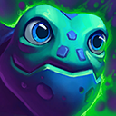
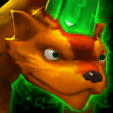
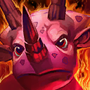
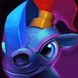

| :: Strife Pets :: | ||
|---|---|---|
| Os pets funcionam como os feitiços de invocador e as runas do LoL. Cada pet oferece uma habilidade ativa, uma condicional e uma passiva. | ||
| :: Iniciais :: | ||
| Mystik Mystik is perfect for your prototypical magic ability user. Mystik augments all Magic damage, and provides a useful harassment boost to the laning phase. Mystik does not offer any utility or defense however, so position carefully. | Inspiration Activate: regenerate 93-135 mana over 0.5s (⏰105s). Dive Bomb When your abilities affect an enemy, Mystik deals up to 20-68 Pure Damage (scales with hero level & power) (⏰16s). Spell Mastery Increases Magic Damage by 6%. | |
|  | Tortus Tortus is focused solely on improving your hero's survivability. Tortus helps tanks, but really shines when paired with a traditionally fragile hero as it can surprise your enemies with the added health and healing. | Rejuvenate Activate: regenerates 15% Max Health over 1s (⏰160s). Harden After being hit, blocks 50% of incoming basic attacks for 2s (⏰12s). Vitality Increases Max Health by 15%. |
| Pincer Pincer is a versatile pet who helps you counter-act aggression. Pincer can break you out of CC, make you generally more durable, and make enemies think twice about harassing you in lane. Using Pincer's ability effectively can be tough, and the resistance bonus is best with more health. | Breakout Activate: remove all stuns/slows and provide 50% stun/slow reduction for 2 seconds (⏰120s). Retaliate When an enemy attacks you, Pincer deals 30-100 Pure Damage (scales with hero level & power) (⏰20s). Defense Increases Resistance by 6-15. | |
| :: 1ª Geração :: | ||
| Bounder Bounder excels at enhancing your hero's mobility. For the player who likes to kite, evade, or just move faster, Bounder is the ideal choice. Bounder enables you to fight on your terms, but provides little in toe-to-toe fights. | Slide Activate: dash 500 distance in target direction (⏰100s). Frostbite When you attack, Bounder slows target by 20% for 3 seconds (⏰14s). Quickness Increases Movement Speed by 4%. | |
| Fitz Fitz increases both the success rates and rewards for ganks, while granting out-of-combat movespeed to decrease downtime. However, Fitz's effectiveness is severely hindered if you are not able to successfully execute on gank attempts. | Shadow Stalk Activate: deal 118-300 damage to target enemy hero over 3s and grant vision (⏰120s). Bounty Upon killing an enemy hero, gain 110 gold (⏰55s). On The Prowl Increases Movement Speed by 10% while out-of-combat. | |
|  | Luster Luster is all about boosting your Gold Per Minute, enabling you to get more and shinier items. Luster is also an excellent choice if you struggle with last-hitting or plan on fighting neutral monsters. Beware: your higher GPM will make you worth more gold to enemies! | Blast Activate: deal 700-1008 damage to target non-hero unit (⏰75s). Greed is Good If you miss a killing blow, Luster gets it for you (⏰15s). Luster Touch Increases Gold Gain from non-heroes by 3. |
| Razer Razer is an excellent choice for heroes revolving around their basic attack. It enhances offensive attack output while providing critical survivability to traditionally fragile heroes. Try using Razer's ability offensively by tricking enemies into thinking you're retreating. | Into the Shadows Creates an illusion and applies stealth to your hero for 2.25s; Stealth breaks if the illusion dies (⏰110s). Carnivorous Bite Your next attack on a hero heals you for 26-96 Health (scales with hero level & power) (⏰14s). Savagery Increases Attack Damage by 2.7-9. | |
|  | Topps Topps is an ideal choice for heroes who want to be in the middle of the action. Topps deals damage to nearby enemies, slows nearby enemies, and provides a boost in Power which should allow you to invest more gold into defense. Topps can make an imposing hero even more scary. | Tremble Activate: slow nearby enemy heroes for 2.25 seconds (⏰120s). Immolate When an enemy comes in range, Topps deals up to 120 Pure Damage over 5 seconds (scales with hero level & power) (⏰18s). Unleashed Increases Power by 6 + 0.6 per level. |
| :: 2ª Geração :: | ||
| Fiki Fiki is the perfect choice for heroes that want to jungle or better handle creeps in lane. Fiki will jump in front of creeps and taunt them, will occasionally heal you when you are below 75% health and enables damage reduction from enemy creeps. Use Taunt to hold waves of creeps from pushing or to jungle without being attacked! | Taunt Target an enemy unit to have Fiki taunt all nearby units for 15s (⏰90s). Rejuvenate When your hero is below 75% HP, heals by 55-125 (⏰40s). Deflection Blocks Creep Damage by 11-32. | |
|  | Plunder Plunder is great pet for heroes who like aggressively pushing lanes. Plunder grants a powerful buff to allied brawlers, occasionally gives you gold for attacking enemies, and provides you with a nice chunk of resistance. Try using Promote when enemies aren't there to defend. | Promote Grants up to 5 allied brawlers +35% attackspeed, +75% base damage, and 300-1245 health (scales with hero level) for 15 seconds (⏰105s). Pillage Atacar um herói ou torre concede 20 gold (⏰18s). Resilience Increases Resistance by 5 + 1 per level. |
| Tink Tink is an ideal choice for heroes who need help defending towers or need to avoid getting locked down. Tink provides a powerful buff to allied towers, periodically reduces incoming stuns and slows, and provides increased out of combat regeneration. Heroes will think twice about trying to push down the lane you're in! | Enhance Defenses Activate: Grant a friendly tower +50% damage, +100 resistance & +100% splash damage against enemy brawlers for 8 attacks. Kills earned by the tower will be credited to you (⏰115s). Brace for Impact When stunned or slowed, gain 50% stun/slow reduction for 3 seconds (⏰25s). Augmented Repairs Increases Out-of-Combat Regeneration by 3 Health & 1.5 Mana/sec. | |
| Zen Nenhuma descrição fornecida. | Knowledge Target a position up to 3500 range to scout it. Gains vision & reveals enemies in a 700 AoE for 8 seconds (⏰35s). Revitalize Prevents you from losing Out-of-Combat Regeneration for 5 seconds the next time you enter combat (⏰12s). Wisdom Increases Cooldown Reduction by 13%. | |